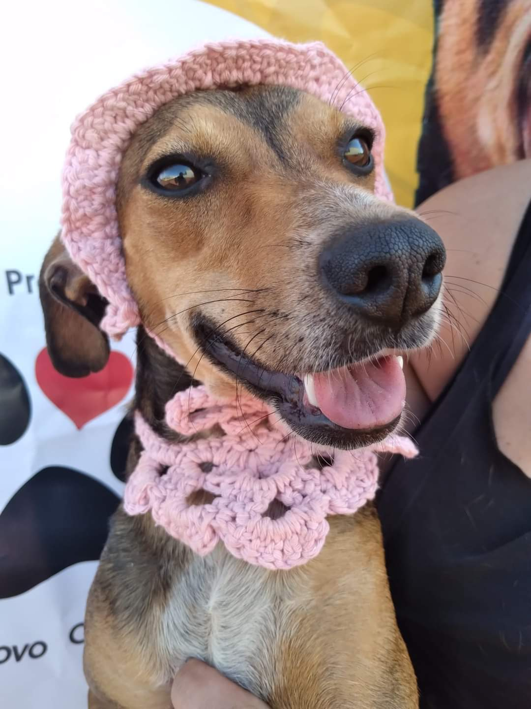

Como Você Pode Ajudar?
Sua ajuda é fundamental para continuarmos nosso trabalho na proteção e cuidado dos animais. Veja algumas formas de contribuir e faça a diferença hoje mesmo!

Faça uma doação
Sua contribuição faz toda a diferença! Com sua ajuda, podemos cuidar, alimentar e oferecer um lar cheio de amor para muitos animais que precisam. Doe o que puder e transforme vidas hoje mesmo.
Doar

Seja um voluntário
Junte-se a nós para fazer a diferença! Como voluntário, você ajuda diretamente nossos peludinhos, trazendo cuidado, carinho e esperança para suas vidas. Venha compartilhar seu tempo e amor — juntos, somos mais fortes!
Candidatar